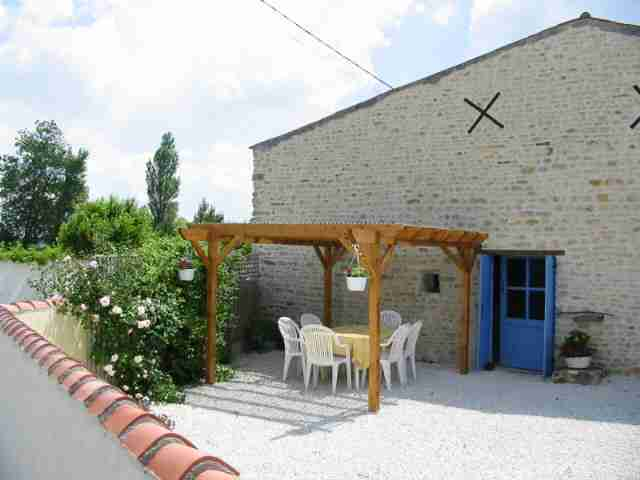

Out and About

The Charente Maritime enjoys a climate second only to the Riviera. Official figures show that we enjoy, on average, 2250 hours of sunshine a year, compared with 1750 in northern France, which means mild winters and long glorious summers. There is plenty to see and do in the area and all within an hour from Les Ribaudieres.
Why not sit and watch the world go by in one of the many harbour restaurants in the cosmopolitan town of La Rochelle or take in the atmosphere of the lively resort of Royan.
If you prefer quieter pursuits, then you will probably enjoy the typically French seaside town of Fouras or perhaps messing about in a boat to discover the canals of the Marais Poitevin. Or, why not wander round one of the many local markets or perhaps visit Cognac for a tour of one of the cognac houses and try some of the local Pineau.
-
A twenty-five minute walk from Les Ribaudieres is the small village of St Loup. In the village there is a bar which, along-side the usual drinks and coffees, serves simple home-cooked French food at lunchtimes. Next door there is a small grocery shop.
-
La Rochelle is about 45 minutes drive from Les Ribaudieres. Here you can enjoy a relaxed cosmopolitan atmosphere, where visitors enjoy local seafood and wine, film festivals, historic sites, take a trip to Fort Boyard, or just sit and watch the world go by at the marina side.
https://www.larochelle.fr/
-
St Jean d’Angely is a small and historic town with a twice weekly market. The speciality of the area is, of course, seafood and when in season the stalls are overflowing with oysters, which last year were only about 20p each. You get a fantastic view of the town if you climb to the top of the unfinished abbey towers. http://www.angely.net
-
Brouage is an ancient town founded in about 1555. It is completely walled and played a vital role then in the defence of the coastline. The walls have stood the test of time, and there are views of the Marais or salt marshes from the ramparts.
https://www.oleron-island.com/getting-ready-for-my-holidays/what-to-do/heritage-and-museums/citadelle-de-brouage/
-
Cognac is worth a trip; it is a beautiful town and you can visit one of the many cognac houses. Why not try some of the local Pineau while you are there; it's delicious! http://www.cognac.fr/web_bnic_en/asp/accueil3.asp
So why not come and see for yourself? You'll be guaranteed a warm welcome here at Les Ribaudieres in the heart of the sunny Charente Maritime.
USEFUL LINKS
;){kind=link}